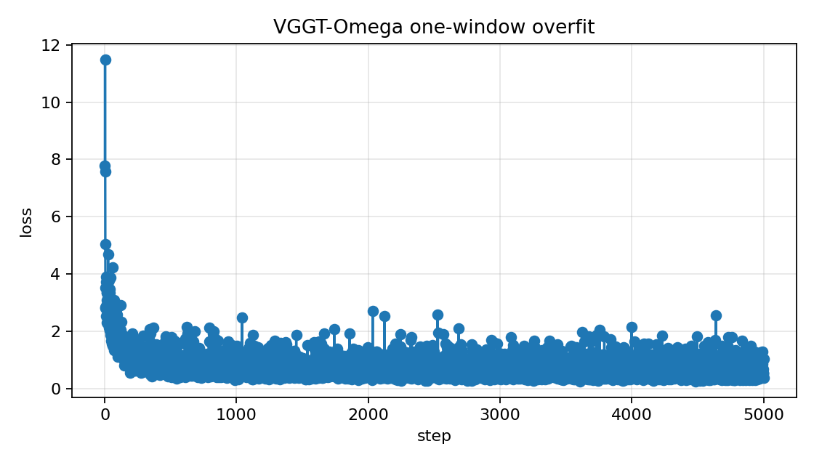

VGGT-Omega RoPE-flow pt-iehvb2xw 50-window single-GPU eval on 3 train and 3 test windows.
| Task | Status | Commit | What landed |
|---|---|---|---|
| E1 | PASS | Pulled pt-iehvb2xw training log/history/final checkpoint and confirmed the ACP job succeeded. | |
| E2 | PASS | Evaluated 3 deterministic train windows and 3 deterministic subject07 test windows. | |
| E3 | PASS | Generated 12 videos: RGB overlay and 3D pred-vs-GT for each selected window. |
pt-iehvb2xw completed 5000 steps and wrote final.pt/history.json/timing.jsonl.
Overall mesh/joint L2 are 573.9/573.7 mm, while root-aligned MPJPE is 18.6 mm.
This run disabled the object head, so object ADD-S/pose metrics are not applicable.
| SHA | Type | Subject |
|---|---|---|
| 9fe0a97 | remote-code | feat(vggt): add rope-aware hand flow head |
| db88e7d | local-docs | docs(progress): vggt ropeflow acp monitor checkpoint |
| Aspect | Current state |
|---|---|
| Remote output | /mnt/afs/haonan/hoi3r/HOI3R/.worktrees/vggt-hand-flow-rope-redesign-20260521/logs/vggt_omega/hoi3r-vggt-ropeflow-50seq-cam836-g1-bs2-5k-20260521T024030Z_9fe0a97/eval_publish_train3_test3_20260521T0715Z |
| Checkpoint | /mnt/afs/haonan/hoi3r/HOI3R/.worktrees/vggt-hand-flow-rope-redesign-20260521/logs/vggt_omega/hoi3r-vggt-ropeflow-50seq-cam836-g1-bs2-5k-20260521T024030Z_9fe0a97/final.pt |
| Eval contract | 3 train + 3 test contiguous 16-frame windows, camera0/frame0 coordinates, object head disabled |
| Monitors | vggt_ropeflow_50seq_g8_submit and vggt_ropeflow_50seq_anygpu_submit remain alive |
| Task | Priority | What's needed |
|---|---|---|
| P0 | P0 | Fix or disable multi-GPU DDP submissions; 4/8 GPU jobs still fail with unused-parameter reduction errors. |
| P1 | P1 | Diagnose global/root offset: root-aligned hand shape is reasonable but global hand placement is off by ~0.58m. |
Loss curve parsed from history.json of ACP job pt-iehvb2xw. The tail remains noisy: final step loss is 0.3595, while the last-20 mean is 0.6265.

Object prediction was disabled for this run (--vggt-object-head-style none), so object metrics are intentionally not reported. GT object points are retained only as visualization context.
| Split | Sequence | Frames | Mesh L2 mm | Joint L2 mm | Root-aligned MPJPE mm | RGB | 3D |
|---|---|---|---|---|---|---|---|
| test | 20200928-subject-07/20200928_143249 | 7-22 | 610.07 | 609.64 | 33.14 | RGB overlay | 3D video |
| test | 20200928-subject-07/20200928_143249 | 23-38 | 510.17 | 509.77 | 13.92 | RGB overlay | 3D video |
| test | 20200928-subject-07/20200928_143249 | 39-54 | 546.47 | 545.92 | 16.90 | RGB overlay | 3D video |
| train | 20200709-subject-01/20200709_141754 | 9-24 | 648.06 | 648.02 | 15.51 | RGB overlay | 3D video |
| train | 20200709-subject-01/20200709_141754 | 25-40 | 583.76 | 583.63 | 13.89 | RGB overlay | 3D video |
| train | 20200709-subject-01/20200709_141754 | 41-56 | 545.16 | 545.38 | 18.43 | RGB overlay | 3D video |
Asset index: open bundled eval page. Raw metrics: metrics_summary.json, metrics_summary.csv.
Paste this into a new Claude Code session:
Read https://haonanhe.github.io/HOI3R-project-tracking/updates/2026-05-21-session-summary-vggt-ropeflow-pt-iehvb2xw-eval-publish.json and continue from tasks_pending[0] (P0 [P0]: Fix or disable multi-GPU DDP submissions; 4/8 GPU jobs still fail with unused-parameter reduction errors.). Context: branch main@db88e7d; worktree /mnt/afs/haonan/hoi3r/HOI3R/.worktrees/vggt-hand-flow-rope-redesign-20260521.
{kind=link}